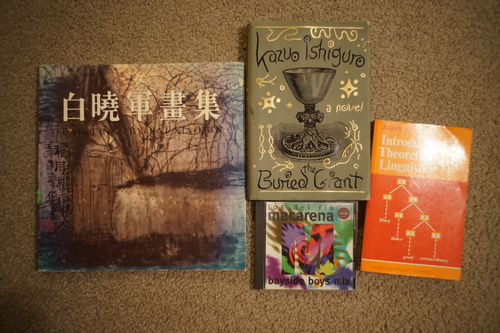

My Luts order came in a bit ago. Here's a link to my review and lots of photos if you missed it. I'm not ecstatic about it at all, but my dolls did need new shoes and wigs very badly.
I marked one doll resolution checked off the list. Everyone has a decent wig now, assuming the wigs I got for the BC twins fit them. Not everyone has shoes though. My final task is finding a pair for the BC twins. That body has awkward sized feet so it's not an easy task.
I did a family portrait the yesterday and all my dolls cooperated for once. Only Cheby tried to attack Verona, but that was after the photo.


Cheby stole my heart. It's official now.


Next on my list of doll purchases: eyes. This will probably be another painful one. I'm also planning on buying Hina a set of SDGr hands in May since they're available for SDGr Marie Antoinette. I think it'll be okay as long as I can stop myself from buying more dolls.
I think I've already spent more this year than last year on dolls. My three major purchases were Praline, Hina's hand collection, and Cheby's body. I'm praying my hardest that having wigs for my tinies will make me want to get them out to play with them more. I should start dressing Grassy like a boy...
Maybe I should make another more realistic goal first. Perhaps cleaning the adhesive off Cheby's chest from the Mazel Tov nipple censor should be next.
Also I've had to beg people for photos of their dolls for my bulletin board?! Please send me doll photos! I want to add them!
I don't know the artist but these are pretty.
I found it with my eagle eyes!
Now how do I convince Hina to hold it?